Inicio › Otros de tecnología y hogar › Starlink
Otros de tecnología y hogar Starlink en Honduras: precios comparados
13 productos Starlink en 2 tiendas (Diunsa, Game Station). Desde L 200.
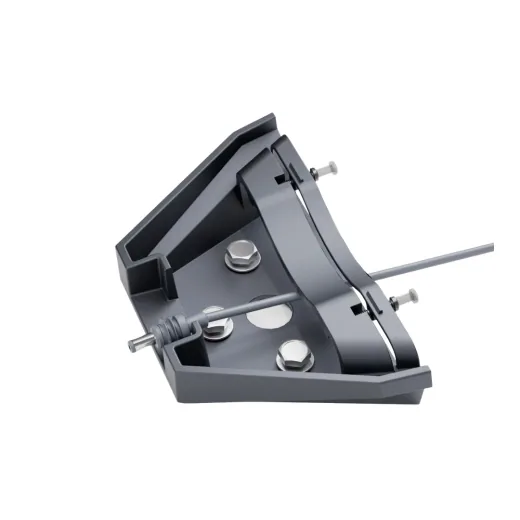
Starlink Mini Mobility MountL 799En Diunsa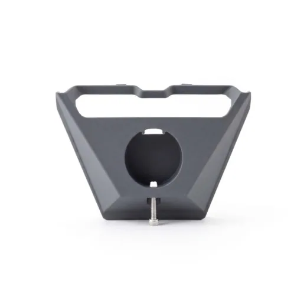
Starlink Mini Pipe Adapter And Flat MounL 799En Diunsa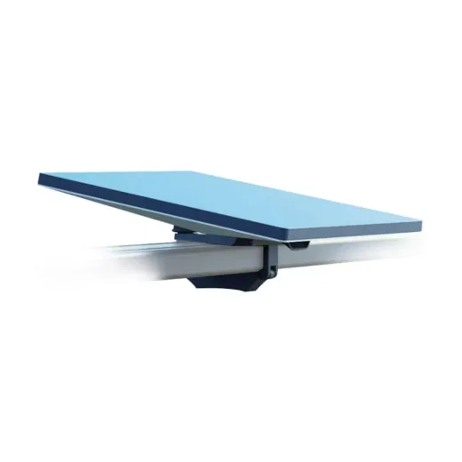
Starlink Mini Roof Rack MountL 899En Diunsa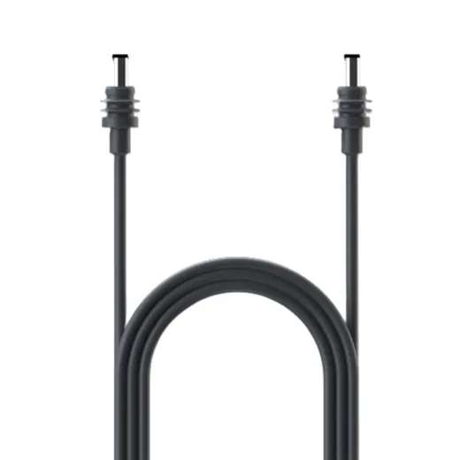
Starlink Mini DC Power Cable 15ML 1,099En Diunsa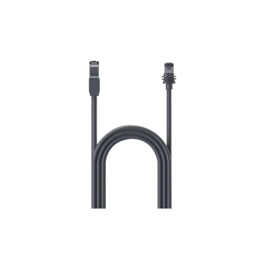
Starlink Mini Cable Ethernet 15ML 1,299.01En Diunsa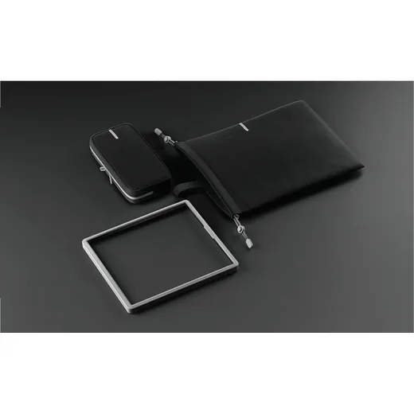
Starlink Mini Travel KitL 1,299.01En Diunsa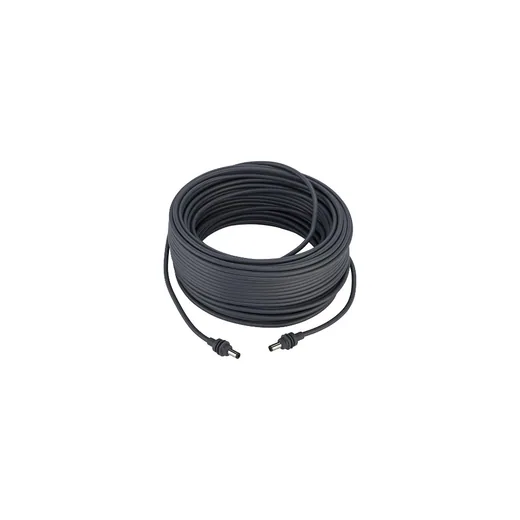
Starlink Mini DC Power Cable 30ML 1,598.99En Diunsa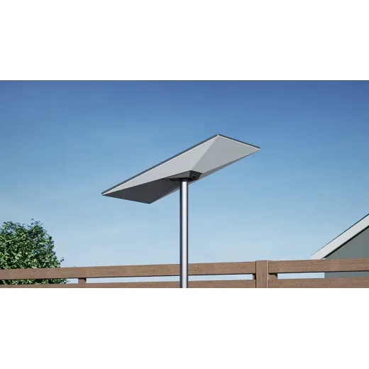
Starlink Standard Pipe AdapterL 1,899En Diunsa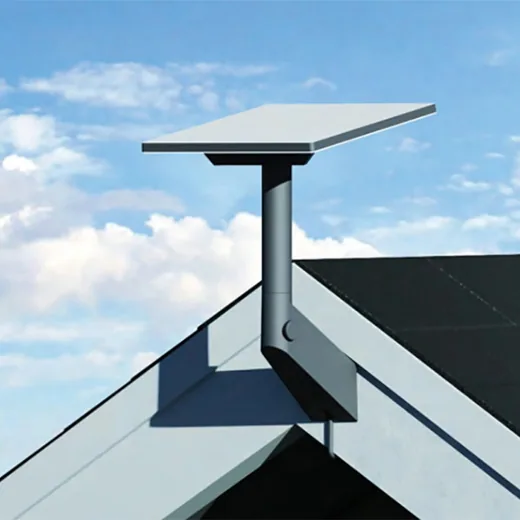
Starlink Mini Wall MountL 2,099En Diunsa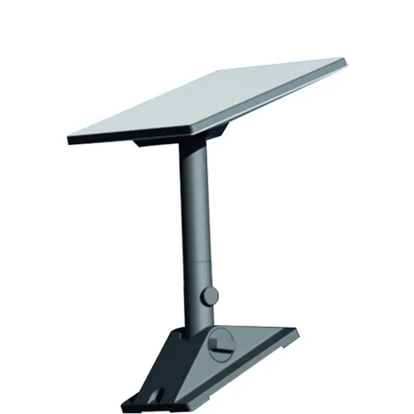
Starlink Mini Pivot MountL 2,299En Diunsa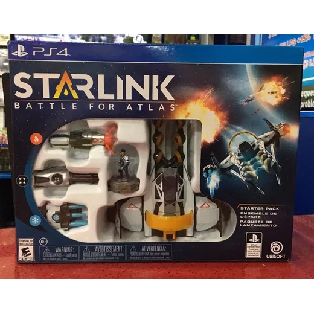
PS4 Starlink Battle for Atlas Starter PackL 200En Game Station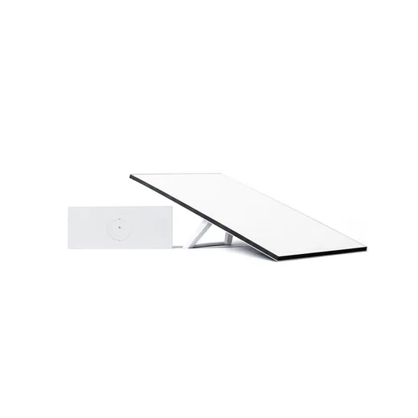
Kit Estandar Starlink/AC/Db/WifisystemL 9,599En Diunsa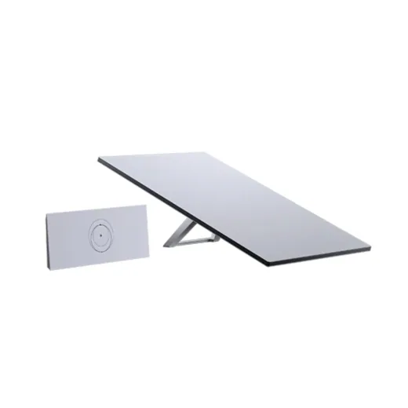
Kit Estandar Starlink/AC/Db/Wifisystem4XL 9,599En Diunsa
Preguntas frecuentes
¿Dónde están más baratos los otros de tecnología y hogar Starlink en Honduras?
Revisa cada producto: mostramos el precio en cada tienda.